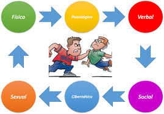

Tipos de Violencia
Acoso social. Consiste en lesionar emocionalmente las relaciones de una alumna o un alumno con otro u otros, aislarlo, no tomarlo en cuenta o marginarlo. Puede ser directo o indirecto, como divulgar rumores acerca de sus actividades personales y avergonzarlo en público. Acoso físico. La acción continúa de una alumna o un alumno o bien de alumnas y alumnos para lastimar u ocasionar lesiones corporales a otro u otros. Incluye golpear, patear, pellizcar, escupir, hacer tropezar, empujar, hacer gestos desagradables o inadecuados con la cara o las manos.